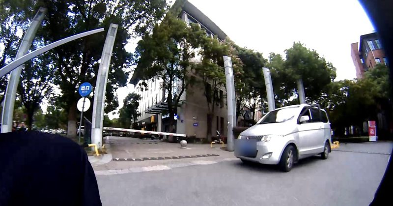

1
Seeing is not deciding

At a campus exit a van stands ahead on the right. Seven lines lead to a goal 12 m along the rider's path. Five of six zero-shot models pick line 7 and say it avoids the van. The rider keeps right, and LinePilot picks the rider's line 2.